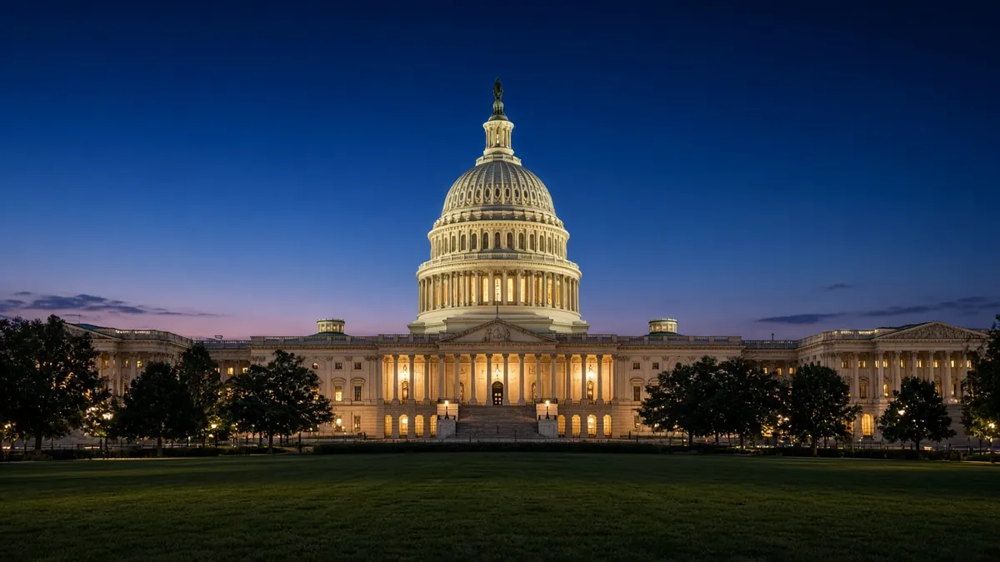

⏱️ · First published 2026-10-20
🏛️ Politics › Government shutdown deadline 2026
Government shutdown deadline 2026

By The Trends Incoming team
There is no government shutdown in October 2026. Federal funding runs through Friday, Dec 11, 2026 under H.R. 6500, so the next possible shutdown date is Dec 12, in the lame-duck session after the Nov 3 midterms. Key dates, Congress's options and what a shutdown would mean for you. Strictly nonpartisan.
What's trending in Government shutdown deadline 2026
Shutdown watch: the real deadline is Dec 11
No shutdown in October. The stopgap law signed Sept 2 (H.R. 6500) funds the government through Friday, Dec 11, 2026, so the next deadline lands in the lame-duck session after the Nov 3 election. Key dates and what a shutdown would mean for Social Security, mail and parks.
The quick version
The current government funding deadline is Friday, December 11, 2026. There is no shutdown in October. The stopgap law Congress passed, H.R. 6500 (Public Law 119-103), signed September 2, funds federal agencies through December 11, per Congress.gov. If no new funding law is enacted by then, a lapse could begin Saturday, December 12. As of Friday, October 23, the deadline is 49 days away, and Congress is out until after the November 3 election, so no funding votes are expected before then.
| Current deadline | Fri Dec 11, 2026 |
|---|---|
| Funding law | Continuing Appropriations and Extensions Act, 2027 (H.R. 6500) |
| Public law | 119-103, signed Sep 2, 2026 |
| Shutdown in October 2026? | No |
| Earliest possible lapse | Sat Dec 12, 2026 |
| Midterms | Tue Nov 3, 2026 |
| Last checked | Oct 23, 2026, against Congress.gov |
| Days until the deadline | 49, counting from Fri Oct 23 |
Key dates
| Date | What happens |
|---|---|
| Sep 2, 2026 | H.R. 6500 signed into law (Public Law 119-103) |
| Oct 1, 2026 | Fiscal year 2027 began, funded by the stopgap |
| Tue Nov 3, 2026 | Midterm elections |
| November to December | Lame-duck session: funding, defense bill, extensions |
| Fri Dec 11, 2026 | Stopgap funding expires at the end of the day |
| Sat Dec 12, 2026 | First day a lapse could start if nothing passes |
| Dec 31, 2026 | Export-Import Bank, TANF and Community Health Center Fund deadlines |
| Jan 3, 2027 | New Congress convenes |
What could happen by December 11
- Full-year funding: Congress passes some or all of the 12 fiscal 2027 appropriations bills, as one big omnibus or several smaller packages.
- Another stopgap: a new continuing resolution pushes the deadline into 2027, when the new Congress is seated.
- A mix: some full-year bills plus a stopgap for the rest.
- A lapse: if nothing is enacted in time, agencies without approved funding pause work that is not excepted.
WilmerHale's October 14 analysis says the election results will shape the choice: Republicans may want to lock in a deal before January, while Democrats may prefer to wait if they win control of a chamber. Holland & Knight noted on October 9 that the House had passed 3 of the 12 bills and the Senate none before the recess. We link analysis from across the spectrum and don't take a side.
What a shutdown would mean for you
| Social Security and SSI | Payments continue on normal dates, per SSA |
|---|---|
| Delivery continues; USPS funds itself through postage | |
| National parks | Depends on the NPS contingency plan; in past shutdowns some stayed open with few or no services |
| Federal workers | Non-excepted staff are furloughed; excepted staff keep working (OPM guidance) |
The full story, including our October 17 correction of an earlier Oct 31 date, is in our explainer: Is there a government shutdown in October 2026? For the rest of the lame-duck to-do list, see our Congress page, and for the election that comes first, Elections 2026 and early voting dates.
Quick answers
Is there a government shutdown in October 2026?
No. The Continuing Appropriations and Extensions Act, 2027 (H.R. 6500, Public Law 119-103), signed September 2, 2026, funds federal agencies through December 11, 2026. There is no October deadline.
Is there a government shutdown on October 31, 2026?
No. Some posts pointed to an October 31 deadline, but the law on Congress.gov funds the government through December 11, 2026.
When is the next government funding deadline?
Friday, December 11, 2026. If no new funding law is enacted by the end of that day, agencies without appropriations would start shutting down on Saturday, December 12.
Could there be a government shutdown in December 2026?
It is possible, not certain. By December 11, Congress could pass full-year funding, another short-term extension into 2027, or a mix of the two. A shutdown happens only if no funding law is enacted in time.
Will Social Security payments stop in a government shutdown?
No. The Social Security Administration says Social Security and SSI payments continue on their normal dates during a shutdown. Local offices stay open with reduced services, and some requests, like proof of benefits letters, wait until it ends.
Does the mail still come during a government shutdown?
Yes. The Postal Service generally receives no tax dollars for operating expenses and pays its way through postage and services, so mail delivery continues.
Are national parks open during a government shutdown?
It depends on the National Park Service contingency plan in effect. In past shutdowns, some parks stayed accessible with limited or no visitor services, while staffed facilities such as visitor centers closed. Check nps.gov and the Interior Department's shutdown page before you go.
What happens to federal workers in a shutdown?
Employees whose work is not excepted are furloughed. Excepted employees, such as those protecting life and property, keep working. OPM's furlough guidance has the details.
How many days until the government shutdown deadline?
Funding runs out at the end of Friday, December 11, 2026. Our homepage countdown shows the time left, and our shutdown page tracks any change Congress makes.
Do members of the military get paid during a government shutdown?
Active-duty troops keep working during a lapse. In past shutdowns, paychecks could be delayed unless Congress passed a separate pay measure or the lapse ended before payday. Watch for any pay bill in the lame-duck session.
Do TSA and air traffic controllers work during a shutdown?
Yes. They are excepted employees who keep working, but in past shutdowns they went without pay until funding was restored, which can mean longer security lines if staff call out.
Has Congress done anything about the December 11 deadline yet?
Not as of October 21, 2026. Congress is out until after the November 3 election, so action is expected in the lame-duck session in November and December.
Who decides whether there is a shutdown?
Congress must pass funding bills and the President must sign them, or Congress must override a veto. If no funding law is enacted by the deadline, agencies without appropriations begin an orderly shutdown.
How many days until the government shutdown deadline?
As of October 23, 2026, the funding deadline of Friday, December 11 is 49 days away. A lapse could begin on Saturday, December 12 if no new funding law is enacted.
Has anything changed with the December 11 deadline?
Not as of October 23, 2026. Congress.gov still shows H.R. 6500 (Public Law 119-103) funding the government through December 11, and Congress is not expected back until after the November 3 election.
We cover politics neutrally: sourced facts, both sides represented, and no endorsements. Polls are snapshots, not predictions.